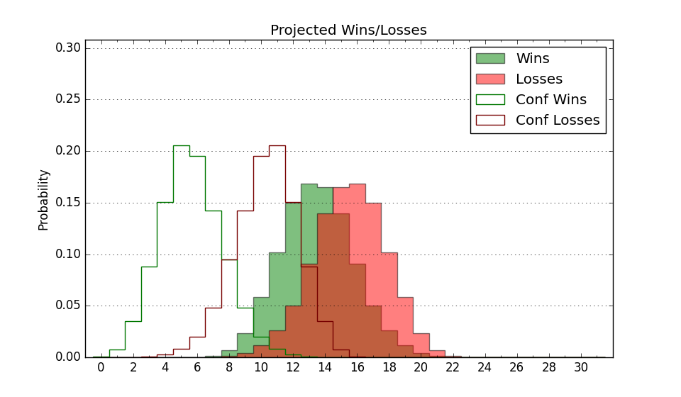

| Home | Game Probabilities | Conferences | Preseason Predictions | Odds Charts | NCAA Tournament |
| City: | San Diego, California | |
| Conference: | West Coast (1st)
| |
| Record: | 0-0 (Conf) 6-4 (Overall) | |
| Ratings: | Comp.: -4.7 (224th) Net: -3.9 (212th) Off: 99.8 (231st) Def: 103.7 (194th) SoR: 2.6 (152nd) |
| Remaining | ||||||
|---|---|---|---|---|---|---|
| Date | Opponent | Win Prob | Pred. | |||
| 12/15 | Portland St. (165) | 54.1% | W 77-76 | |||
| 12/21 | South Dakota (278) | 75.9% | W 83-74 | |||
| 12/29 | Fresno St. (169) | 55.7% | W 73-71 | |||
| 1/4 | Saint Mary's (48) | 20.3% | L 63-73 | |||
| 1/6 | @ Gonzaga (24) | 4.3% | L 67-90 | |||
| 1/11 | San Francisco (58) | 23.0% | L 68-77 | |||
| 1/13 | Pepperdine (187) | 58.6% | W 78-75 | |||
| 1/18 | @ Portland (212) | 33.5% | L 78-83 | |||
| 1/20 | Gonzaga (24) | 13.4% | L 72-86 | |||
| 1/27 | @ Pepperdine (187) | 29.4% | L 73-80 | |||
| 2/1 | @ San Francisco (58) | 8.1% | L 64-81 | |||
| 2/3 | @ Santa Clara (133) | 20.1% | L 73-83 | |||
| 2/7 | Loyola Marymount (120) | 42.5% | L 74-76 | |||
| 2/10 | @ Pacific (356) | 78.1% | W 80-71 | |||
| 2/15 | Portland (212) | 63.2% | W 83-78 | |||
| 2/17 | Santa Clara (133) | 46.2% | L 77-79 | |||
| 2/24 | @ Saint Mary's (48) | 6.9% | L 59-77 | |||
| 2/29 | @ Loyola Marymount (120) | 17.8% | L 70-81 | |||
| 3/2 | Pacific (356) | 92.4% | W 85-66 | |||
| Previous | Game Score | |||||
| Date | Opponent | Win Prob | Result | Off | Def | Net |
| 11/8 | Jackson St. (268) | 73.8% | W 87-61 | 7.4 | 13.8 | 21.2 |
| 11/11 | @UC San Diego (184) | 29.1% | L 63-69 | -11.6 | 7.2 | -4.4 |
| 11/17 | Le Moyne (339) | 87.0% | W 80-71 | -6.9 | 0.6 | -6.3 |
| 11/20 | Navy (272) | 74.5% | W 67-59 | -2.9 | 13.0 | 10.1 |
| 11/24 | (N) Arkansas St. (222) | 49.8% | W 71-57 | -9.0 | 28.8 | 19.8 |
| 11/25 | (N) Hawaii (134) | 31.8% | L 66-77 | -6.5 | 2.8 | -3.8 |
| 11/29 | Northern Colorado (266) | 73.4% | W 74-72 | -8.2 | 0.3 | -7.8 |
| 12/3 | @Stanford (96) | 13.7% | L 64-88 | -8.8 | -5.6 | -14.3 |
| 12/6 | @Utah St. (46) | 6.6% | L 81-108 | 8.6 | -13.4 | -4.8 |
| 12/9 | Arizona St. (84) | 32.4% | W 89-84 | 12.2 | -5.4 | 6.8 |
| Stats & Trends | |||||
|---|---|---|---|---|---|
| Current | Day | Week | Month | Season | |
| Composite | -4.7 | -0.0 | +0.4 | +1.4 | +2.1 |
| Comp Rank | 224 | -1 | +8 | +4 | +10 |
| Net Efficiency | -3.9 | -0.0 | +0.2 | -22.4 | -- |
| Net Rank | 212 | +2 | -2 | -171 | -- |
| Off Efficiency | 99.8 | -0.0 | +3.8 | -9.8 | -- |
| Off Rank | 231 | -3 | +53 | -180 | -- |
| Def Efficiency | 103.7 | -0.0 | -3.6 | -12.6 | -- |
| Def Rank | 194 | -5 | -63 | -141 | -- |
| SoS Rank | 258 | -3 | +57 | -32 | -- |
| Exp. Wins | 13.5 | -0.1 | +1.0 | +2.8 | +3.4 |
| Exp. Conf Wins | 5.7 | -0.1 | +0.4 | +1.3 | +1.4 |
| Conf Champ Prob | 0.1 | +0.0 | -0.0 | +0.0 | -- |

| Advanced Stats | ||
|---|---|---|
| Stat | Value | Rank |
| Off Eff FG % | 0.496 | 196 |
| Off Ast Ratio | 0.143 | 153 |
| Off ORB% | 0.247 | 253 |
| Off TO Rate | 0.169 | 285 |
| Off FT Ratio | 0.333 | 185 |
| Def Eff FG % | 0.501 | 185 |
| Def Ast Ratio | 0.147 | 238 |
| Def ORB% | 0.287 | 224 |
| Def TO Rate | 0.154 | 157 |
| Def FT Ratio | 0.381 | 263 |